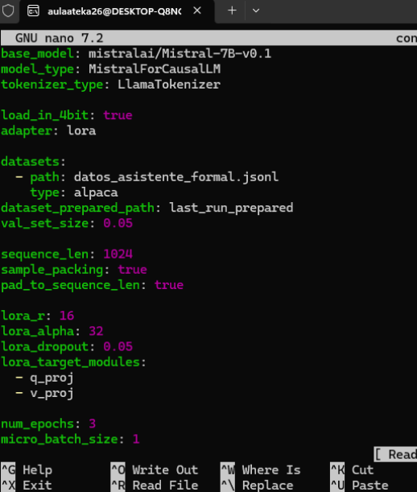

wsl --install -d Ubuntu
sudo apt update
sudo apt upgrade -ymkdir mi-finetuning
cd mi-finetuning
sudo apt install -y python3 python3-venv
python3 -m venv venv
source venv/bin/activate
pip install --upgrade pipCada línea contiene campos instruction y output para preguntas y respuestas formales sobre alumnos de 2º de ASIR.
nano datos_asistente_formal.jsonlbase_model: mistralai/Mistral-7B-v0.1
model_type: MistralForCausalLM
tokenizer_type: LlamaTokenizer
load_in_4bit: true
adapter: lora
datasets:
- path: datos_asistente_formal.jsonl
type: alpaca
dataset_prepared_path: last_run_prepared
val_set_size: 0.05
sequence_len: 1024
sample_packing: true
pad_to_sequence_len: true
lora_r: 16
lora_alpha: 32
lora_dropout: 0.05
lora_target_modules:
- q_proj
- v_proj
num_epochs: 3
micro_batch_size: 1
gradient_accumulation_steps: 2
learning_rate: 0.0002
optimizer: adamw_bnb_8bit
lr_scheduler: cosine
output_dir: ./outputs/modelo-formal

pip install unsloth[qwen,mistral,train]accelerate launch -m unsloth.run config_formal.ymlCon load_in_4bit: true el modelo base se carga cuantizado a 4 bits y el adapter LoRA añade unas pocas capas entrenables usando muy poca VRAM.
Se observa que el modelo mantiene el estilo formal y repite la estructura del dataset, demostrando que el fine-tuning ha modificado su comportamiento hacia el dominio concreto.